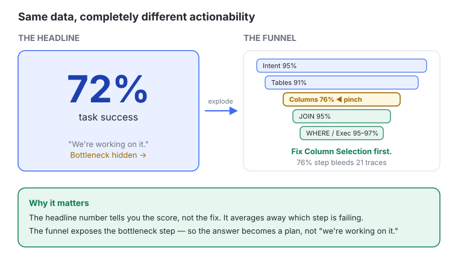
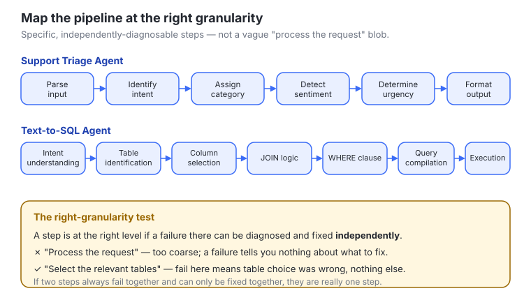
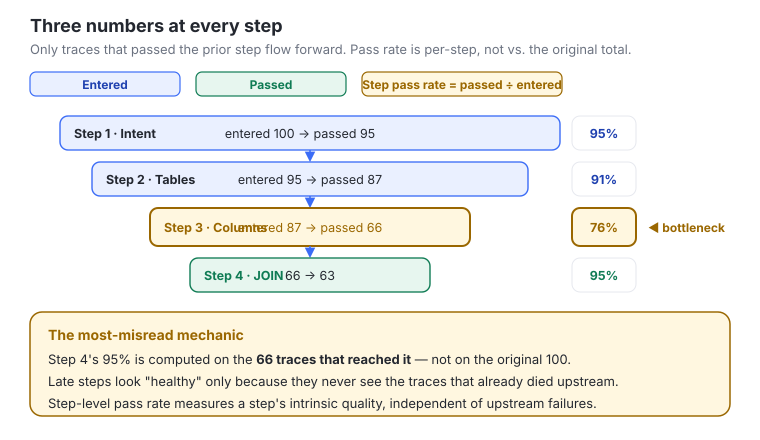
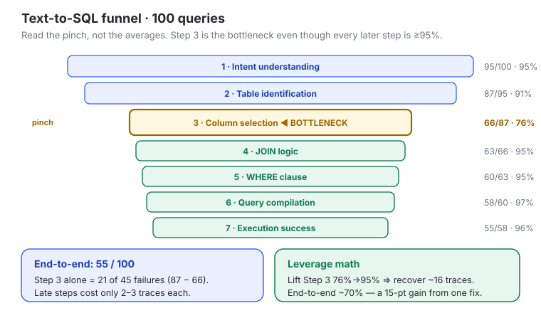
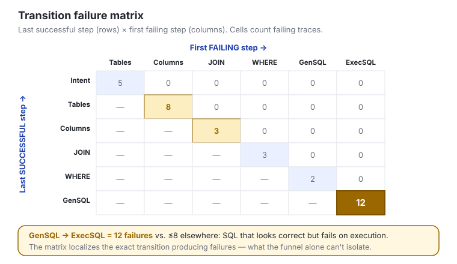
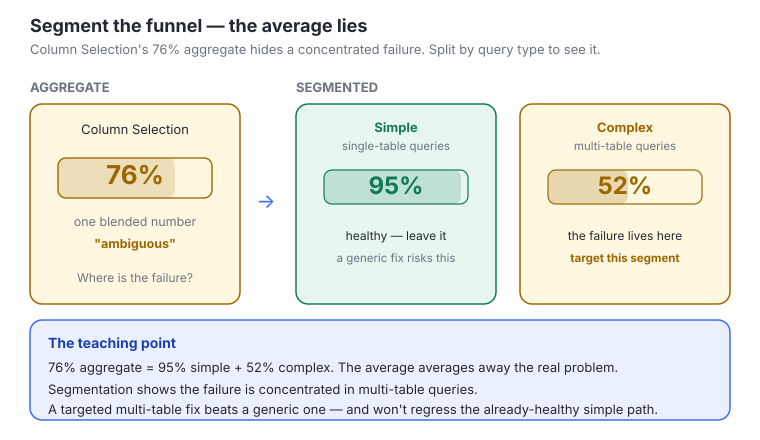
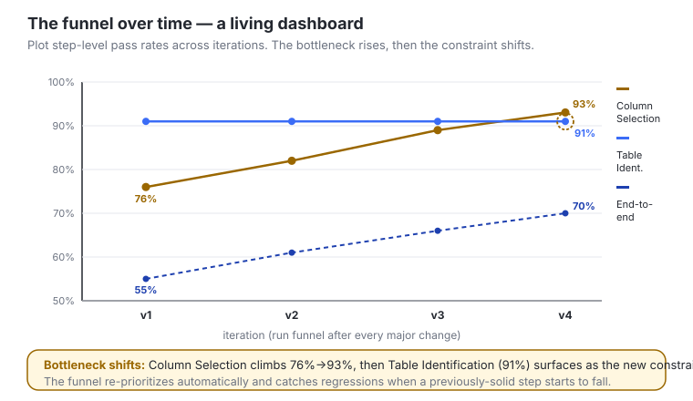

#Chapter 13 — Visualizing Multi-Step Agent Evaluations with Failure Funnels
#In one line
This chapter teaches PMs how to turn a single, unactionable headline metric ("72% task success") into a step-by-step failure funnel that pinpoints exactly which step in a multi-step agent pipeline is the bottleneck — so you know what to fix first, can predict the payoff, and can tell leadership a concrete story instead of "we're working on it."
#Why it matters for PMs
A 55% end-to-end success rate sounds bad, but the number alone tells you nothing about what to do. The recurring failure mode: a PM presents "55% task success" to leadership, leadership asks "what are we doing about it?", and without a funnel the honest answer is "we're working on it" — which earns a follow-up meeting. With a funnel the answer becomes "Column Selection accounts for 47% of failures; we have a targeted prompt fix in testing that should bring end-to-end success to ~72%; we ship next week" — which earns a nod. The funnel is the artifact that converts an abstract quality score the PM owns into a prioritized, predictable, communicable roadmap. It is the difference between optimizing steps that aren't the problem and applying the one fix with the highest leverage.
#Core concepts
- Single metrics are not actionable. A headline like "72% task success" doesn't reveal where failures occur or which step bottlenecks the pipeline. It tells you the score, not the fix.
- Failure funnel. A sequential visualization that measures success (pass/fail) at each pipeline step and shows exactly where requests fall out. Only traces that pass a given step proceed to the next. It turns abstract quality scores into concrete engineering priorities.
- Step-level pass rate. Of the traces that reached this step, what % passed? Measures the step's intrinsic quality, independent of upstream failures. Used for engineering prioritization.
- Cumulative pass rate. Of all original traces, what % have passed all steps up to this point? Represents the user-facing reality at each stage. Used for stakeholder communication.
- Bottleneck step. The step with the lowest step-level pass rate; it disproportionately limits end-to-end success and is the first thing to fix.
- Fix upstream first. The earliest bottleneck step has the highest leverage — improving it lifts every downstream metric. Improving a late step that already has a high pass rate has minimal end-to-end impact.
- Transition failure matrix. A diagnostic grid mapping the last successful step against the first failing step across all failing traces. Each cell counts traces that passed one step but failed at the next. High-count cells are the improvement targets, and the matrix distinguishes independent step failures from cascading ones.
- Segmented funnels. Separate funnels per query type or user segment, to find where a failure is concentrated rather than optimizing for an average that hides the real problem.
#The mental model — how to think about this
Picture the classic marketing funnel, but the thing flowing through it is traces (recorded agent runs), and each stage is a step the agent must get right. A trace only descends to the next stage if it passed the current one. The narrowing of the funnel is your failure: the stage where the funnel pinches hardest is where you're losing the most users.
Two mental traps the funnel breaks:
- The averaging trap. A 55% end-to-end number averages away the signal. The pipeline is a chain, and a chain's strength is its weakest link, not the mean of its links. Find the weakest link.
- The "high pass rate = healthy" trap. Late steps often show 95–97% pass rates — but only because they never see the traces that already died upstream. Their high rates are computed on a small, already-filtered survivor set. Don't be fooled into "fixing" a late step that looks shaky; its few failures cost you almost nothing.
The corollary is leverage math: improving the earliest bottleneck (e.g., 76% → 95%) recovers many traces; improving a healthy late step (96% → 99%) recovers a handful. Always spend your fix where the funnel pinches earliest.
#Key frameworks / steps / loops
Building a failure funnel — 3 steps:
- Map your pipeline steps. List every distinct step the agent performs in sequence, and be specific. "Process the request" is not a step; "identify the user's intent from the query," "select the relevant database tables," "generate the SQL WHERE clause" are steps.
- Support Triage Agent example: Parse input → Identify intent → Assign category → Detect sentiment → Determine urgency → Format output.
- Text-to-SQL Agent example: Intent understanding → Table identification → Column selection → JOIN logic → WHERE clause → Query compilation → Execution.
- Right granularity test: the level at which a failure at one step can be diagnosed and fixed independently. If two "steps" always fail together and can only be fixed together, they are really one step for funnel purposes.
- Define binary success criteria per step. Each step gets a Pass/Fail criterion evaluable independently, using the same eval types from earlier modules (LLM judges, code-based evals). Examples:
- "Did intent understanding correctly interpret the user's goal?" → LLM judge with a labeled dataset of intents.
- "Did the agent select the correct database tables?" → code eval comparing selected tables against ground truth.
- "Is the generated SQL syntactically valid?" → code eval using a SQL parser.
- "Did the query execute without errors?" → code eval checking the execution result.
- The criteria must be specific enough that a Pass at Step 3 and Fail at Step 4 tells you "column selection was correct, but JOIN logic was wrong" — not "something went wrong somewhere in the middle."
- Measure the funnel. Run your reference dataset through the pipeline. At each step record three numbers: traces entered, traces passed, and the step-level pass rate (passed ÷ entered for that step, not ÷ the original total). Only traces that passed the previous step proceed.
The improvement / iteration loop (track over time):
- Run the funnel on the reference dataset after every major change.
- Plot step-level pass rates over time; the bottleneck step should climb as you iterate.
- Ship when the target step improved and no other step regressed. Revert when the change made things worse. (If a previously solid step starts failing, you've introduced a regression — investigate before continuing.)
- As you fix the bottleneck, expect the bottleneck to shift to the next weakest step. The funnel re-prioritizes you automatically.
Reporting cadence:
- Weekly (internal team): review funnel metrics, identify the current bottleneck, plan the next experiment.
- Bi-weekly / monthly (stakeholders): end-to-end success rate, bottleneck identification, improvement trajectory (the funnel tracked over time), and next steps — one page, funnel visualization as the centerpiece.
When funnels DON'T apply:
- Parallel multi-agent systems — agents don't form a sequence, so there's no narrowing funnel. Use per-agent eval suites plus an orchestration eval instead.
- Single-turn agents — a one-step pipeline doesn't need a funnel; standard eval suites suffice.
#Visual explainers

ch12-01-headline-vs-funnel.jpg) — Contrasts a single "72% task success" headline number against the same data exploded into a step-by-step funnel. Teaching point: the headline hides the bottleneck; the funnel exposes exactly which step is bleeding traces. Same data, completely different actionability.
ch12-02-pipeline-mapping.jpg) — Two example pipelines drawn as ordered step chains (the Support Triage Agent and the Text-to-SQL Agent). Teaching point: what "the right granularity" looks like — specific, independently-diagnosable steps, not a vague "process the request" blob.
ch12-03-funnel-measurement.png) — Shows the three numbers recorded at each step (entered, passed, step-level pass rate) and how traces only flow forward if they passed the prior step. Teaching point: step-level pass rate is computed against traces that reached the step, not the original total — the single most-misread mechanic of the funnel.
ch12-04-funnel-case-study.jpg) — The 7-step Text-to-SQL funnel with the 100-query walk-through (the table reproduced below), visually pinching at Step 3. Teaching point: read the pinch, not the averages — Step 3 (76%) is the bottleneck even though every later step is ≥95%.
ch12-05-transition-matrix.jpg) — A grid of last-successful-step (rows) × first-failing-step (columns) with failure counts in cells; the GenSQL→ExecSQL cell lights up with 12 failures vs. 2 elsewhere. Teaching point: the matrix localizes the transition producing failures — SQL that looks correct but fails on execution — which the funnel alone can't isolate.
ch12-06-segmented-funnels.jpg) — The same Column Selection step split into "simple single-table queries" (95%) vs. "complex multi-table queries" (52%) beside the misleading 76% aggregate. Teaching point: the aggregate average lies; segmentation reveals the failure is concentrated, so a targeted multi-table fix beats a generic one.
ch12-07-funnel-over-time.png) — Step-level pass rates plotted across iterations, the bottleneck rising and the bottleneck shifting (Column Selection 76%→93%, then Table Identification surfaces at 91% as the new constraint). Teaching point: the funnel is a living dashboard — it catches regressions and re-prioritizes as the weakest link moves.#How this connects to: simulation / dataset strategy / synthetic data / actual data
- Reference dataset is the fuel. The funnel is measured by running your reference dataset through the pipeline. The quality and coverage of that golden/edge-case dataset (built in the dataset-strategy modules) directly determines whether the funnel reflects reality. A weak dataset produces a confident but wrong funnel.
- Segmentation needs labeled inputs. Segmented funnels (simple vs. complex queries) require your dataset to be tagged by query type / user segment — a dataset-design decision you make upfront, not after the fact.
- Synthetic data fills sparse steps. If a downstream step is only ever exercised by the handful of traces that survive the bottleneck, you have thin evidence for it. Synthetic/targeted examples that start at that step let you evaluate it without waiting for upstream fixes — and warn you that, once the bottleneck clears, later steps will see more and harder traces (so their pass rates may dip; that's expected and healthy).
- Actual (production) data sets the cadence. The "run the funnel after every major change" loop is fed by real traces over time; production failures tell you when the live bottleneck differs from the offline one and when to refresh the reference set.
#Working with ML / eng teams
- Hand engineers the matrix, hand leadership the funnel. Use the funnel for prioritization and stakeholder math; use the transition matrix for engineering diagnosis (it distinguishes independent failures from cascading ones and names the exact transition to fix).
- Co-own the per-step success criteria. The PM defines what "pass" means at each step in user terms; engineers implement the eval (LLM judge / code eval / SQL parser / execution check). Disagreement on a criterion is a disagreement about what "good" means — resolve it before measuring.
- Set the leverage expectation explicitly. Engineers may want to fix the step that looks shakiest (a late 96%). The funnel math is your argument for fixing the early bottleneck instead: Step 3 (76%→95%) recovers ~16 traces; Step 7 (96%→99%) recovers ~2.
- Wire it into the iteration discipline. Tie ship/revert decisions to the funnel: ship only when the target step improves and nothing regresses. This gives eng a clean, objective gate and catches regressions in previously-solid steps.
- Funnel visualization can live in the trace-analysis app (the next module's custom dashboard), with drill-down from the aggregate funnel to individual failing traces — but the value is in the measurement, not the presentation.
#Role of design
- The funnel is a communication artifact first. Its job is to make cascading failures visible and the bottleneck obvious at a glance — visual hierarchy should draw the eye straight to the pinch point.
- One-page discipline for stakeholders. The monthly report keeps the funnel as the centerpiece on a single page; design serves the narrative (where we break → what we're fixing → expected lift → timeline), not decoration.
- Drill-down as the interaction model. In a custom trace-analysis dashboard, the design pattern is aggregate funnel → segment → individual failing trace, letting a reviewer move from "Step 3 is the problem" to "here are the 21 traces that died there."
- Restraint: the lesson is explicit — a plain table (step, entered, passed, pass rate) is a perfectly adequate funnel. Don't over-design; a spreadsheet or notebook view is enough to start.
#Process to follow
- Map 3–5 (to start) major, independently-diagnosable pipeline steps.
- Define a binary Pass/Fail criterion per step (LLM judge or code eval as fits).
- Measure: run the reference dataset; record entered / passed / step-level pass rate at each step.
- Read the funnel: find the lowest step-level pass rate = the bottleneck; count how many traces it costs (entered − passed).
- Do the improvement math: estimate end-to-end lift if the bottleneck rose to peer level (e.g., 55% → ~70%).
- Diagnose with the matrix: build last-successful × first-failing counts to name the exact transition to fix.
- Segment if the aggregate looks ambiguous (by query type / user segment) to confirm the failure is concentrated.
- Fix the earliest bottleneck first, then re-run the funnel; ship if the target improved and nothing regressed, revert otherwise.
- Track over time; watch the bottleneck shift and catch regressions.
- Report: weekly internally (bottleneck + next experiment), bi-weekly/monthly to stakeholders (one-page narrative with the funnel as centerpiece).
#References & sources
Source module: "Visualizing Multi-Step Agent Evaluations with Failure Funnels" — Reforge-style course, Module/Chapter 13 (delivered as Module 12 lessons in the SCORM player: 1. Intro · 2. Case Study: Text-to-SQL Failure Funnel · 3. Advanced Funnel Techniques · 4. Recap and Further Learning). Notion meeting note: https://app.notion.com/p/3785d1164941800ea4bdf38ffe3aed7a
Recommended talk: Failure is a Funnel by Bryan Bischof — full talk on transition matrices and funnel visualization. https://youtu.be/R_HnI9oTv3c
Cross-references to other course modules:
- Module 12 — decomposing complex agents into evaluable components (this chapter visualizes those evals).
- Modules 6 & 7 (Week 2) — eval types reused for per-step Pass/Fail criteria (LLM judges, code-based evals).
- Module 9 — the iteration loop, applied to the transition the matrix identifies.
- Module 10 — the iteration pattern for ship-vs-revert decisions on funnel results.
- Module 14 (next) — vibecoding custom trace-analysis applications; the dashboard pattern is the natural home for funnel visualization with drill-down to failing traces.
Worked case-study data (Text-to-SQL, 100 queries):
Step Step name Entering Passing Step pass rate 1 Intent understanding 100 95 95% 2 Table identification 95 87 91% 3 Column selection (bottleneck) 87 66 76% 4 JOIN logic 66 63 95% 5 WHERE clause 63 60 95% 6 Query compilation 60 58 97% 7 Execution success 58 55 96% End-to-end: 55/100. Step 3 accounts for 21 of 45 failures (87 − 66). Lifting Step 3 to 95% recovers ~16 traces → end-to-end ~70% (a 15-point gain from one fix). Transition-matrix example: GenSQL→ExecSQL = 12 failures vs. DecideTool→PlanCal = 2.
#Skill / template / app ideas
/failure-funnelskill — given a list of pipeline steps + a results CSV (entered/passed per step), auto-compute step-level and cumulative pass rates, flag the bottleneck, run the improvement math ("if step X → Y%, end-to-end → Z%"), and emit the one-page stakeholder narrative.- Funnel spreadsheet/Notion template — columns: step name, entered, passed, step-level pass rate, cumulative pass rate, failures contributed; with a highlighted bottleneck row and an auto-filled "if fixed to peer level" projection.
- Transition-matrix generator — ingest failing traces (each tagged with last-successful + first-failing step), output the matrix grid with hot cells ranked as improvement targets.
- Segmented-funnel view — same input plus a segment tag column; renders one funnel per segment to expose concentrated failures the aggregate hides.
- Funnel-over-time tracker — append each post-change run, plot step-level pass rates across iterations, auto-flag regressions and bottleneck shifts; pairs with the next module's trace-analysis app for drill-down to individual failing traces.
#Teaching notes (for the instructor)
- Open with the leadership scene. The "we're working on it" vs. "Column Selection = 47% of failures, fix ships next week" contrast lands the why in 30 seconds. Make PMs feel the follow-up-meeting-vs-nod difference before any math.
- The #1 misconception to drill: step-level pass rate is computed on traces that reached the step, not the original total — and late steps look healthy only because they never see the traces that died upstream. Walk the case-study table row by row so this clicks.
- Make them compute leverage live. Have the room calculate: Step 3 (76%→95%) ≈ 16 traces recovered vs. Step 7 (96%→99%) ≈ 2. The "fix upstream first" rule should feel like arithmetic, not an opinion.
- Funnel vs. matrix, one line each: funnel = which step and how much it costs (for stakeholders + prioritization); matrix = which transition produces the failures (for engineering diagnosis, independent vs. cascading).
- Hammer segmentation as an anti-average device: 76% aggregate can be 95% simple + 52% complex. Averages hide concentrated failures.
- Set expectations honestly: 7 steps each at 95% ≈ 70% end-to-end — use this to explain to leadership why 99% end-to-end isn't realistic for complex agents. The transparency is the deliverable.
- Close on restraint: the value is in the measurement, not the visualization. A spreadsheet or notebook funnel is a real funnel. Tell PMs to start with 3–5 steps this week. Then tee up Module 14 (custom trace-analysis app as the funnel's eventual home).
- Note on the transcript: the source audio transcript tail contained unrelated, garbled audio bleed (ceremony/birthday/travel fragments) — none of it belongs to this module and it was excluded.